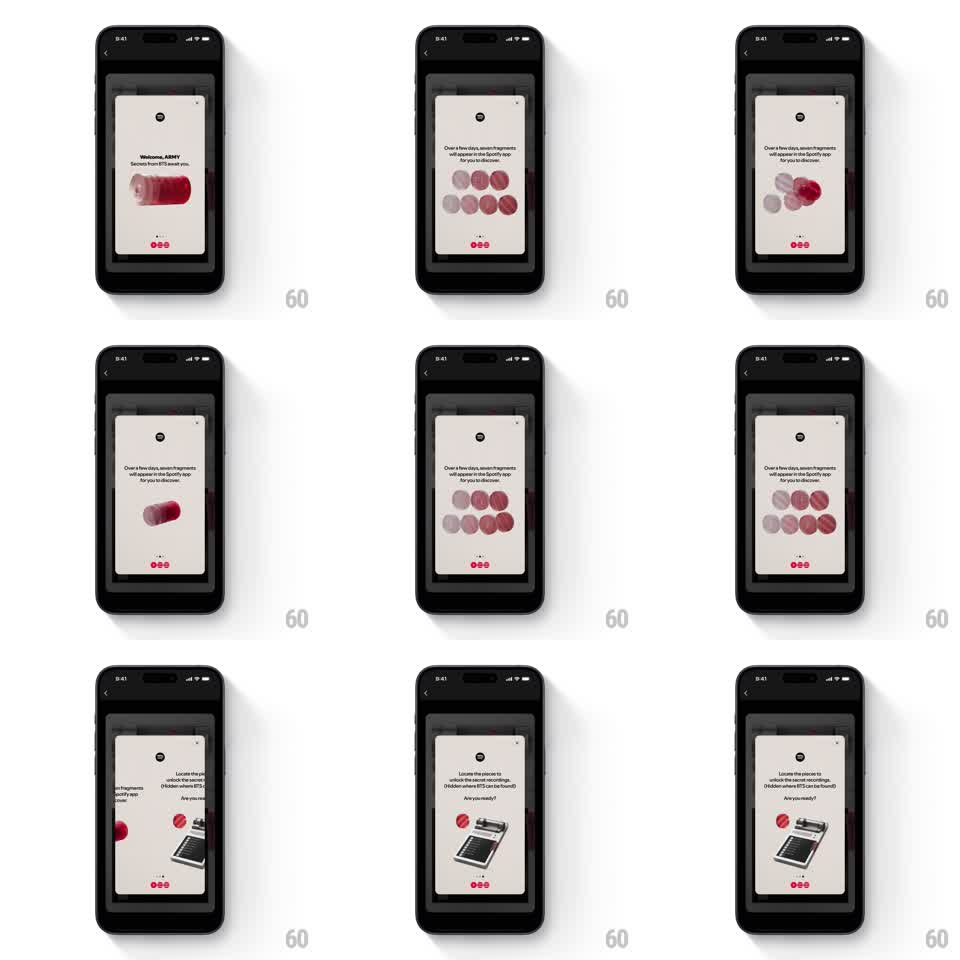

Media
Frame-by-frame

Rebuild this interaction 1:1: Spotify's BTS ARMY campaign modal - a paged card carousel over the dimmed app, with a floating capsule graphic, fragment circles that fill in, and page dots tracking each swipe.

Rebuild this interaction 1:1: Spotify's BTS ARMY campaign modal - a paged card carousel over the dimmed app, with a floating capsule graphic, fragment circles that fill in, and page dots tracking each swipe. ## Integration Integration: stack-agnostic spec - springs given as stiffness/damping, timed motions as duration + curve; map every value to your framework and animation library of choice. ## Scene Modal card (cream, rounded 20px) centered over the dimmed Spotify home: Spotify logo top, close X top-right, headline + subcopy, a graphic zone (page 1: a red-pink capsule rotating; page 2: two rows of circles, fragments filling from grey to red; page 3: a typewriter illustration with a red key), and three page dots at the bottom. ## Motion spec Pattern: paged modal carousel with live graphic states. - The modal rises from below (translateY 40 -> 0, spring ~300/18) with the scrim fading to 60% (250ms). - Swipe between pages: cards track 1:1 with a peek of the next card's edge; release past 30% advances (spring ~320/20); the page dot switch is a stretch - the active dot elongates toward the direction of travel then settles (200ms). - Page graphics animate on arrival: the capsule tumbles in (rotateZ 90 -> 0 degrees with a bounce, spring ~260/13); the fragment circles fill one by one (scale 0.7 -> 1 + color grey -> red, 100ms stagger); the typewriter slides up (translateY 20 -> 0, 300ms). - Copy crossfades per page (180ms), headline first, subcopy 80ms later. ## Calibration - One accent red against cream; the graphic carries it, the dots echo it. - The modal is still while reading - graphics animate only on page arrival, then hold. ## Reduced motion Pages crossfade (200ms); graphics appear at rest. ## Don't miss - The capsule casts a soft shadow that moves with its tumble. - The close X stays fixed in the card's corner across pages - only content swipes.